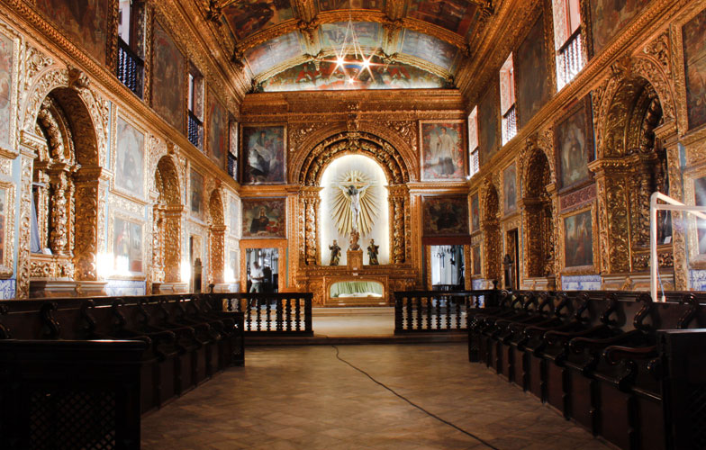
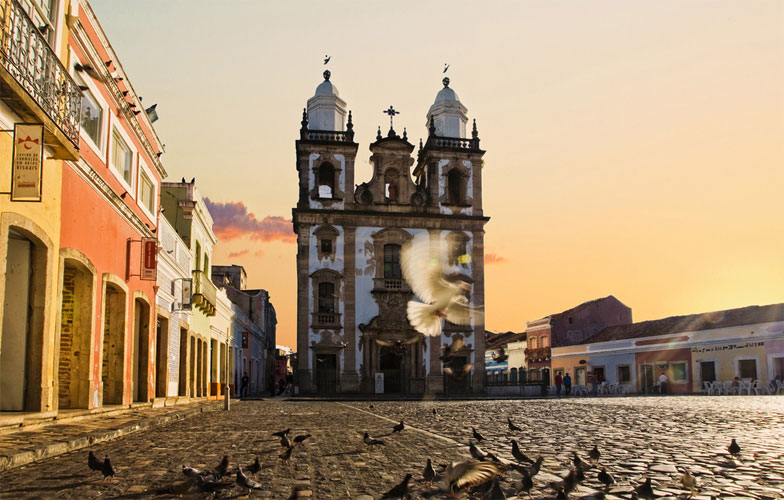
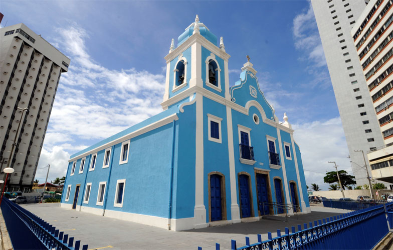
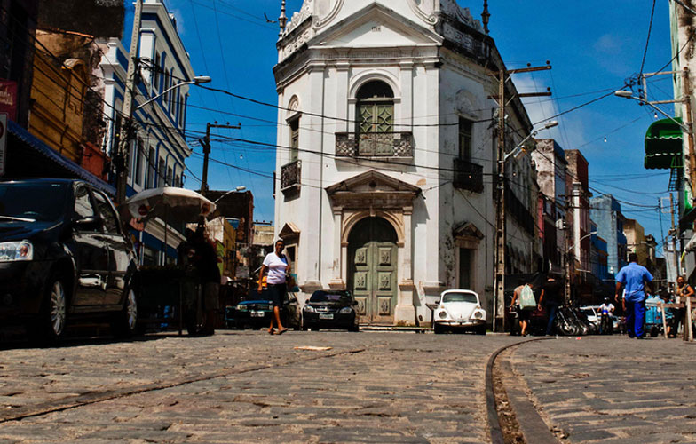
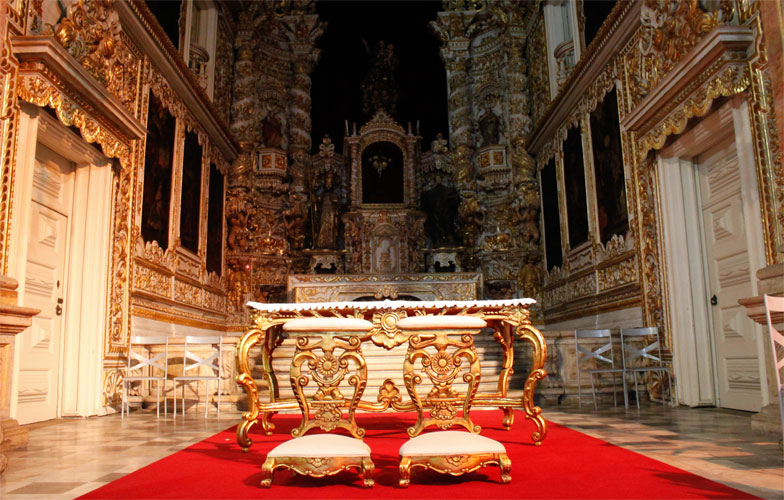
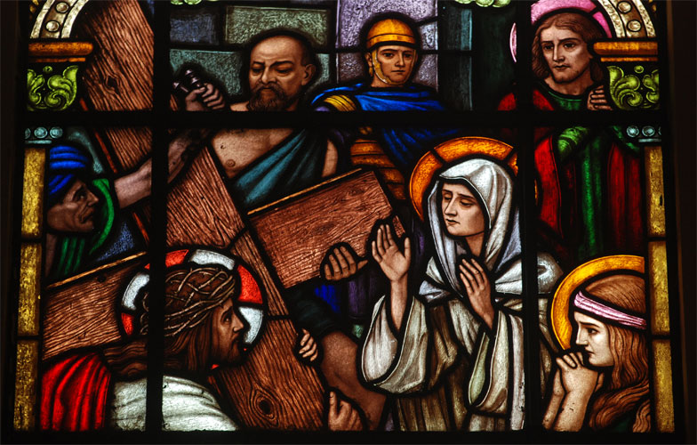
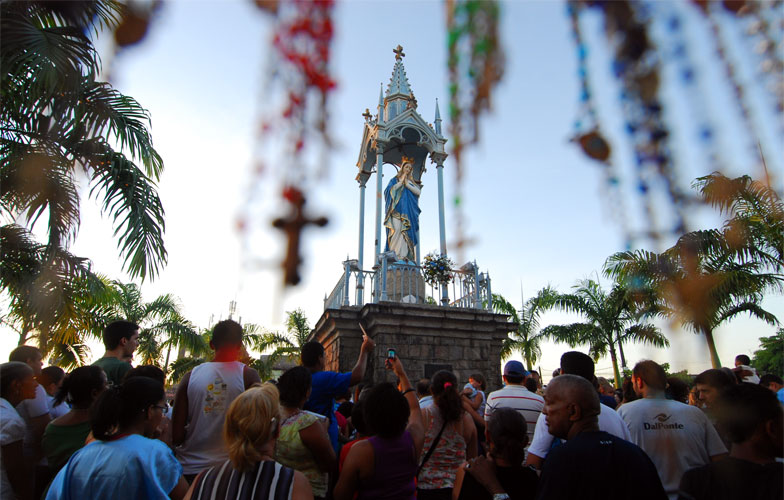

A basílica foi construída em 1687 e possui traços barrocos. No altar dourado, a imagem da padroeira Nossa Senhora do Carmo, em tamanho natural, se destaca. O altar principal abriga valiosas coroas de ouro e pedras preciosas. Foi nesse convento que Frei Caneca ordenou-se sacerdote.
Endereço
Avenida Dantas Barreto, Largo de Nossa Senhora do Carmo, Santo Antônio. Fone (81) 3224-3341
Horário de Funcionamento
Aberta de segunda a sexta-feira, das 7h às 17h. Aos sábados, das 7h às 12h.
Capela Dourada
Capela Dourada

Considerada a expressão máxima da arte sacra barroca no Recife, seu forro é coberto de elaboradas pinturas. O altar dourado possui imagens do século XVIII. Dois grandes mártires franciscanos estão representados em painéis nas paredes laterais da igreja. Para quem quer conhecer um pouco da história cristã, o Museu Franciscano de Arte Sacra, que fica ao lado da capela, é um bom programa.
Endereço
Rua Imperador Dom Pedro II, s/n, Santo Antônio. Fone (81) 3224-0530
Horário de Funcionamento
Aberta de segunda a sexta, das 8h às 12h e das 15h às 17h. Aos sábados, apenas no turno da manhã.
Concatedral de São Pedro dos Clérigos
Concatedral de São Pedro dos Clérigos

Construída em 1782, sua fachada reproduz o Santuário de Santa Maria Maior de Roma. As armas de São Pedro e as imagens dos doze Apóstolos de Cristo e dos quatro Evangelistas estão entalhadas no teto da igreja, todo em madeira.
Endereço
Pátio de São Pedro, s/n, São José
Horário de Funcionamento
Aberta de segunda a sexta-feira, das 8h às 12h e das 14h às 16h.
Igreja das Fronteiras
Igreja das Fronteiras
Na casa paroquial dessa igreja, vivia o arcebispo emérito de Olinda e Recife, Dom Hélder Câmara, que morreu em 1999. É conhecida como "Imperial Capela", já que abriga o emblema real em sua fachada.
Endereço
Rua das Fronteiras, s/n, Boa Vista. Fone: (81) 3231-5341
Horário de Funcionamento
Aberta à visitação de segunda a sexta-feira, das 13h às 17h.
Igreja de Nossa Senhora da Boa Viagem
Igreja de Nossa Senhora da Boa Viagem

Não se conhece a data exata da construção da igreja. No início do século XVIII, o seu interior foi modificado e, a partir do século XIX, uma reforma externa restaurou o prédio. O altar de madeira em estilo colonial apresenta imagens barrocas. Está localizada na orla do bairro de Boa Viagem.
Endereço
Praça de Boa Viagem, s/n, Boa Viagem. Fone: (81) 3326-6161
Horário de Funcionamento
Aberta de terça a sexta, das 14h às 17h.
Igreja de Nossa Senhora do Terço
Igreja de Nossa Senhora do Terço

A construção, que data do ano de 1726, foi erguida onde antes havia apenas um nicho com a imagem de Nossa Senhora, onde as pessoas costumavam rezar o terço. Na frente da igreja, Frei Caneca foi esquartejado e teve suas vestes enterradas. Toda segunda-feira de carnaval, os negros mortos nos tempos de escravidão são homenageados pelos maracatus: é a Noite dos Tambores Silenciosos, que acontece sempre à meia-noite, apenas ao toque de um surdo.
Endereço
Pátio do Terço, s/n, São José
Horário de Funcionamento
Aberta nos horários de missa.
Igreja Madre de Deus
Igreja Madre de Deus

A igreja, em estilo colonial, data do século XVIII e carrega no altar um oratório com a imagem do padroeiro da paróquia. Em 1971, a Madre de Deus foi danificada por um incêndio. No seu interior, é possível encontrar pinturas sacras, mobiliário em jacarandá e a imagem do Senhor do Bom Jesus dos Passos.
Endereço
Rua Madre de Deus, s/n, Bairro do Recife. Fone: (81) 3224-5587
Horário de Funcionamento
Aberta de terça a sexta, das 8h às 12h e das 14h às 17h e, aos domingos, apenas no turno da manhã.
Igreja da Soledade
Igreja da Soledade

Antiga capela de um hospital, a igreja foi fundada no dia 22 de janeiro de 1928. Com estilo neoclássico, possui sete vitrais que representam as sete dores de Maria. Além do altar-mor, em honra à Nossa Senhora da Soledade, tem mais quatro altares laterais. Sua fachada tem uma tonalidade mais escura devido ao pó de pedra, material de que é feita.
Endereço
Rua da Soledade, s/n, Casa Amarela. Fone: (81) 3222-6836
Horário de Funcionamento
Aberta de terça a sexta, das 8h às 11h30 e das 14h às 17h. Aos sábados, no horário da manhã.
Paróquia do Morro da Conceição
Paróquia do Morro da Conceição

Em 1904, uma réplica da imagem da Virgem da Conceição veio da França para o Brasil, para comemorar o Cinquentenário do Dogma da Imaculada Conceição no Brasil. Na mesma época, o bispo diocesano D. Luís Raimundo da Silva Brito mandou construir uma capela gótica, inaugurada em 8 de dezembro de 1906, ainda no bairro do Poço da Panela. Com o desenvolvimento da cidade, criou-se uma nova paróquia, agora na área do Morro da Conceição, em 1974. Tornou-se, em 1975, a Matriz do Morro da Conceição. Atualmente, a edificação possui laterais de vidro, que permitem a quem está do lado de fora da igreja visualizar o altar.
Endereço
Morro da Conceição, s/n, Casa Amarela. Fone (81) 3268-9255
Horário de Funcionamento
Aberta de terça-feira a sábado, das 8h às 20h; e aos domingos, das 7h às 19h.